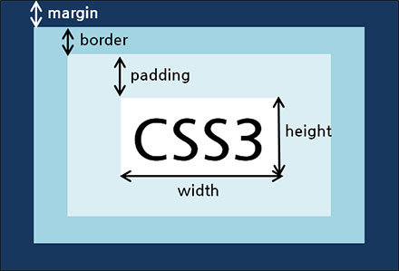

CSS Guide
CSS 기본설정
폰트 설정
가나다라마바사아자차카타파하
가나다라마바사아자차카타파하
가나다라마바사아자차카타파하
가나다라마바사아자차카타파하
가나다라마바사아자차카타파하
가나다라마바사아자차카타파하
/* Font */
@font-face {
font-family:'Nanum Gothic';
font-style: normal;
font-weight: 400;
src: url(../font/NanumGothic-Regular.eot);
src: url(../font/NanumGothic-Regular.eot?#iefix) format('embedded-opentype'),
url(../font/NanumGothic-Regular.woff) format('woff'),
url(../font/NanumGothic-Regular.ttf) format('truetype');
src:local(※), url(../font/NanumGothic-Regular.woff) format('woff');
}
@font-face {
font-family: 'Nanum Gothic Bold';
font-style: normal;
font-weight: 700;
src: url(../font/NanumGothic-Bold.eot);
src: url(../font/NanumGothic-Bold.eot?#iefix) format('embedded-opentype'),
url(../font/NanumGothic-Bold.woff) format('woff'),
url(../font/NanumGothic-Bold.ttf) format('truetype');
src:local(※), url(../font/NanumGothic-Bold.woff) format('woff');
}
@font-face {
font-family: 'Nanum Gothic Extra Bold';
font-style: normal;
font-weight: 800;
src: url(../font/NanumGothic-ExtraBold.eot);
src: url(../font/NanumGothic-ExtraBold.eot?#iefix) format('embedded-opentype'),
url(../font/NanumGothic-ExtraBold.woff) format('woff'),
url(../font/NanumGothic-ExtraBold.ttf) format('truetype');
src:local(※), url(../font/NanumGothic-ExtraBold.woff) format('woff');
}
@font-face {
font-family: 'Nanum Gothic Light';
font-style: normal;
font-weight: 400;
src: url(../font/NanumGothic-Light.eot);
src: url(../font/NanumGothic-Light.eot?#iefix) format('embedded-opentype'),
url(../font/NanumGothic-Light.woff) format('woff'),
url(../font/NanumGothic-Light.ttf) format('truetype');
src:local(※), url(../font/NanumGothic-Light.woff) format('woff');
}
body {
font-family: "Nanum Gothic", Dotum, Helvetica, Arial, sans-serif;
}
strong, b, th, dt, h1, h2, h3, h4, h5, h6 {
font-family: 'Nanum Gothic B', Dotum, Helvetica, Arial, sans-serif;
}속성 선언 순서
- %백분율 단위
- em배수 단위
- px픽셀
크기단위
- %백분율 단위
- em배수 단위
- px픽셀
색상단위
- rgb(red, green, blue)RGB 색상단위
- #000000HEX 코드 단위
가시속성
- none태그를 화면에서 보이지 않도록 함
- block태그를 block 형식으로 지정함
- inline태그를 inline 형식으로 지정함
- inline-block태그를 inline-block 형식으로 지정함
폰트속성
- font-size스타일 크기 지정
- font-style / font-weight폰트 기울기 (italic,normal..) / 폰트 두께(bold, 400, 700)
- line-height글자의 높이를 지정
- font-family폰트를 지정하는 스타일 속성
- text-align글자 정렬과 관련된 속성
- text-decorationa 태그에 href 속성을 지정하면 밑줄이 생기고 글자의 색상이 파란색으로 변경됨
박스속성

Border
- border-width테두리의 너비 지정 (medium, thick, thin)
- border-style테두리의 형태 지정 (dashed, dotted, double, groove, hidden, inherit, initial, inset, none)
배경속성
- background-image배경에 넣을 그림을 지정하는 스타일 속성, CSS3 부터 여러 개 배경이미지 사용 가능
- background-size너비, 높이의 크기 단위 입력
- background-repeatrepeat-x (X축 방향으로 이미지가 반복), repeat-y (Y축 방향으로 이미지가 반복), no-repeat
- background-positionbackground:url(../images/ico_btn.png) no-repeat left top 0